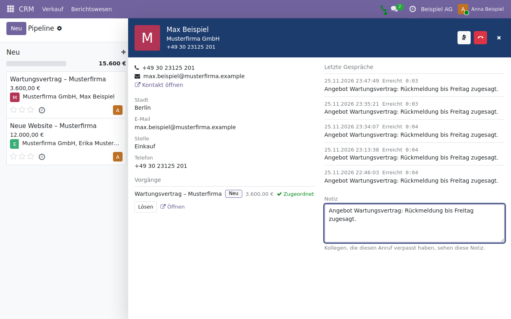
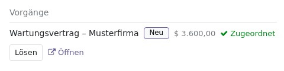

<style>
.wbv{font-family:-apple-system,"Segoe UI",Roboto,Helvetica,Arial,sans-serif;color:#1f2937;line-height:1.6;font-size:16px}
.wbv h1{font-size:2.1rem;margin:0 0 .3em;color:#1c3a6b}
.wbv h2{font-size:1.5rem;margin:1.6em 0 .5em;color:#1c3a6b;border-bottom:2px solid #e5e7eb;padding-bottom:.25em}
.wbv h3{font-size:1.15rem;margin:1.2em 0 .3em}
.wbv .lead{font-size:1.15rem;color:#374151}
.wbv ul{padding-left:1.3em}
.wbv li{margin:.25em 0}
.wbv figure{margin:1.2em 0}
.wbv figure img{max-width:100%;height:auto;border:1px solid #d1d5db;border-radius:6px;box-shadow:0 2px 8px rgba(0,0,0,.08)}
.wbv figcaption{font-size:.9rem;color:#6b7280;margin-top:.4em}
.wbv .hinweis{background:#fff7ed;border-left:4px solid #f59e0b;padding:.7em 1em;margin:1em 0}
.wbv .en{background:#f3f4f6;padding:1em 1.3em;border-radius:6px;margin-top:2em}
.wbv table{border-collapse:collapse;margin:.8em 0}
.wbv td,.wbv th{border:1px solid #d1d5db;padding:.35em .7em;text-align:left}
.wbv a{color:#1c3a6b}
</style>

<section class="wbv"><div class="oe_container"><div class="oe_row">
<h1>WB VoIP CRM</h1>
<p class="lead">Anrufe und Anrufprotokolle am CRM-Vorgang</p>
<figure><figcaption>WB VoIP CRM in Odoo 19</figcaption></figure>
<h2>Ihr Nutzen</h2>
<ul><li>Jeder Anruf gehört zum richtigen Vorgang: WB VoIP ordnet ihn automatisch dem offenen Vorgang des Kontakts zu.</li><li>Der Vertrieb sieht Anrufe und Protokolle direkt am Vorgang, ohne zwischen Telefon und CRM zu wechseln.</li><li>Rückrufe landen als Aktivität am Vorgang, nicht verstreut am Kontakt.</li><li>Aus einem Anruf entsteht mit einem Klick ein neuer Vorgang.</li></ul>
<h2>Funktionen</h2>
<ul><li><strong>Automatische Zuordnung</strong> zum offenen Vorgang des Kontakts oder seiner Firma (gewonnene, verlorene und archivierte Vorgänge werden nie zugeordnet). Bei mehreren zählt der zuletzt geänderte, dem Anrufer zugewiesene; im Zweifel gibt es keine Zuordnung statt einer falschen.</li><li><strong>Block „Vorgänge“</strong> im Anrufer-Fenster: Vorgang zuordnen, lösen oder öffnen.</li><li><strong>Smart-Button „Anrufe“</strong> und Reiter „Anrufprotokolle“ am Vorgang.</li><li><strong>Rückruf-Aktivität</strong> „Rückruf: verpasster Anruf“ am Vorgang.</li><li><strong>Button „Vorgang anlegen“</strong> mit Titel-Vorlage und Verkaufsteam; legt eine Verkaufschance an und ordnet den Anruf zu.</li><li><strong>Rechte wie im CRM</strong>: Es gelten die Record Rules des CRM; Benutzer sehen nur, was sie auch sonst sehen dürfen.</li><li><strong>Ohne eigene Einrichtung</strong>: installiert sich automatisch, sobald WB VoIP und CRM vorhanden sind.</li></ul>
<h2>Screenshots</h2>
<figure><figcaption>Anrufer-Fenster mit dem Block „Vorgänge“</figcaption></figure>
<figure><figcaption>Block „Vorgänge“: zugeordneter Vorgang, Lösen und Öffnen</figcaption></figure>
<h2>Voraussetzungen</h2>
<ul><li>Odoo 19, Community oder Enterprise, mit der App <strong>CRM</strong>.</li><li>Das Modul <strong>WB VoIP</strong> ab Version 19.0.4.2.0 (und damit eine WebRTC-fähige SIP-Anlage mit WSS).</li><li>Lizenz: gilt über den Lizenzschlüssel von WB VoIP.</li></ul>
<h2>Datenschutz-Hinweise</h2>
<div class="hinweis"><p><strong>Vor dem Produktiveinsatz bitte lesen.</strong> Dieser Abschnitt ersetzt keine Rechtsberatung; der Betreiber ist für die datenschutzgerechte Nutzung verantwortlich.</p></div>
<ul><li>Anrufe und Protokolle am Vorgang sind nur für die Benutzer sichtbar, die sie auch sonst sehen dürfen: Benutzer ihre eigenen, WB-VoIP-Administratoren alle.</li><li>Es gelten die Löschfrist und die Hinweise zur Team-Übersicht von WB VoIP (Betriebsrat, Art. 13 und 35 DSGVO).</li><li>Das Modul überträgt keine Daten an Dritte.</li></ul>

<h2>Lizenz und Kontakt</h2>
<p>Lizenz: <strong>OPL-1</strong> (Odoo Proprietary License v1.0). Die Nutzung setzt einen <strong>Lizenzschlüssel von
WISSEN BERATUNG</strong> voraus; der Schlüssel wird über das Modul <code>wb_license_client</code> hinterlegt.
Ohne gültige Lizenz sind Anrufen und Anmelden gesperrt, vorhandene Protokolle bleiben les- und bearbeitbar.</p>
<p>Anfragen, Lizenzen und Support: <a href="https://www.wissen-beratung.de">https://www.wissen-beratung.de</a>
(WISSEN BERATUNG, Tobias Wissen).</p>

<div class="en"><h2 style="margin-top:0">In English</h2>
<p><strong>Bridge between WB VoIP and Odoo CRM: calls are matched to the contact&#x27;s open opportunity, calls and call logs appear on the opportunity, callback tasks land there, and a button creates a new opportunity from a call.</strong></p>
<ul><li>Automatic assignment to the open opportunity (ambiguous matches are left unassigned).</li><li>Opportunities block in the caller window, smart button and tab on the opportunity.</li><li>Callback activity for missed calls on the opportunity; &quot;Create opportunity&quot; call button.</li><li>CRM record rules apply; installs automatically when WB VoIP and CRM are present.</li></ul>
<p><strong>Requirements:</strong> Odoo 19 Community or Enterprise with CRM, WB VoIP 19.0.4.2.0 or later (WebRTC-capable PBX with WSS). Covered by the WB VoIP licence key from WISSEN BERATUNG. User interface: English and German.</p>
<p><strong>Data protection:</strong> Call data is visible only to users who may see it anyway; retention and team overview notes of WB VoIP apply.</p>
<p><strong>Licence:</strong> OPL-1 (Odoo Proprietary License v1.0). A licence key from WISSEN BERATUNG is required
(entered through the <code>wb_license_client</code> module). <strong>Contact:</strong>
<a href="https://www.wissen-beratung.de">https://www.wissen-beratung.de</a>.</p>
</div>
</div></div></section>
